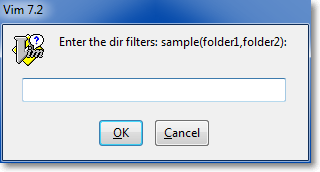
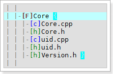
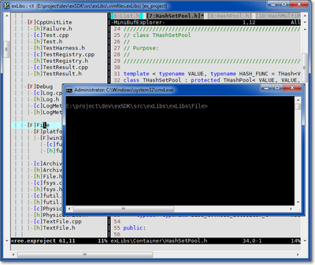
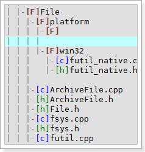

Create Project Tree
When you running a new project through vimentry file, you will have a blank vertical window in the left of vim, that is exProject window.
By default, you can use <leader>C [1] or <leader>R [1] to create project tree. The <leader>C [1] create the project tree with dialog, however <leader>R [1] create the project by reading the file filter and dir filter settings (if not, it read the default settings).
When you use <leader>C [1] command, it will show 2 dialogs.
The first one is the file filters dialog, which will let you input the suffix of files, exProject will only show these files in project window:

The second one is the dir filters dialog, which will let you input the sub-directory names under the root path, exProject will only show these directories in project window:

The syntax of file filter and dir filter are:
filter = item1,item2,item3...
No matter which kind of method you use to create project tree, after generating the project tree, you will see a similar scene like the picture below:

The first two line records the file filter and dir filter you’ve input before. ( Note: if you use <leader>R, it use the default filter settings ). You can edit the value directly, when you save the file, the new settings will applied, and after that use <leader>R to refresh your project tree.
The line with prefix [F] represents a folder.
The other line represents files, and the first character of the file suffix will be inside the []. The exProject window support different highlight for some special filetype, like .h, .cpp. You could add your own file suffix highlight in exProject.
NULL type file filter
Some times we may want to add files without suffix, for example: Makefile, configure and thoes old c/cpp project write source code without suffix. By default, exVim will skip add these files. In order to add it, you must explicit write NULL filter in the file filter. (e.g filter = NULL,item1,item2,…),
Note: the NULL must write in uppercase.
Folding the directory
You are able to fold a directory by moving the cursor to the line of the folder and press <Enter>, press <Enter> again will unfold it.

You can use the vim’s builtin fold command under exProject window, for example:
- To fold up the whole project, use
zM, and usezOto unfold all, or usezrto unfold a level. - When you are in a directory ( your cursor are not in the line of the directory name but in the line of the file of the directory ). You can use
zcandzofor folding a single directory. - You can use
zk,zjto move between folds. The exProject providectrl-kandctrl-jfor faster moving around the directory.
Moving around in exProject window
Basically you use h,j,k,l or arrow keys moving in the project window, exProject provide several feature to help moving faster for different purpose.
To move around the directory, you can use ctrl-k and ctrl-j no matter where your cursor are.
If you are careful enought, you can see the end of the line in each directory, there have a {, and it would have another one } at the last file of the folder.
As the picture shows below:

Note: There have two } at the end of text FileUtility.h, and that is becuase the FileUtility.h is in the path of platform/win32/ and it happend to be the last file in these two folders.
You can use these brackets to help you move around between a folder. The % is perfact for the job to jump between the begin and end, and even better when you use [{, ]}.
When you edit a file in edit window, and you want to locate the file in project window, try <leader>fc, this operation will move the cursor to the project window, and search current edit buffer, if the file founded, it will jump the cursor to it.

Open and edit files
You can open a file in edit window through exProject by pressing <enter> on the file line. Also you can try open it in a split window by pressing shift-<enter>.
When you press shift-<enter> on the directory line, it will open a command window with the path of the directory to help you do some operation outside exVim.

Note: the exProject can let you define open behavior for different filetype. currently it just internal define two additional behavior for .exe and .err. For .exe it try to run it. For .err it will call exQuickFix to open up a window and load the errors into it.
Create new file or folder
To create a new file in exProject window, you can move your cursor under a file line or a directory line, and press o. After that yo will see a line with mark |–[] under your cursor like the picture shows below:

Swith to insert mode, and type the filename with the suffix you expect to create the new file. For example I type ‘'NewFileMng.h’‘. It is ok to leave the [] empty. When you finish input, press <enter> to open the new file in edit window, and save it to complete the file.
Note: the file will be created under the directory if you press o on a directory line, or under the file with same directory if you press o on a file line.
To create a new folder in exProject window, you can move your cursor under a directory line, and press O. After that you will see a line with mark |–[F] { } at the line above your cursor like the picture shows below:

Swith to insert mode, and fill up the directory name right behind [F].
Note: the feature never done, it create the directory virtually. That means if you don’t create the directory with same path same name manually in your file system, it will never be access in exProject.
Refresh local folder
If you do some changes file operation (add,remove,rename files) outside exVim, you probably like to sync it in exProject window. But use <leader>R sometimes cause too much time since it refresh the whole project.
You can use <leader>r instead. Move your cursor under/inside a directory, and press <leader>r, it will only refresh the directory your cursor in.
Note: this also helpful when you use o to add several files. it will refresh them by automatically fill the filetype in the [], and sort them in the directory.
Settings
The chapter exProject introduces all the exProject settings.
Footnotes
<leader>Chere means press key \, then pressshift + c(uppercase “c”). vim recommend 3rd-party plugins use<leader>(aka. ) to begin their operations, and the operations in vim are case sensitive.